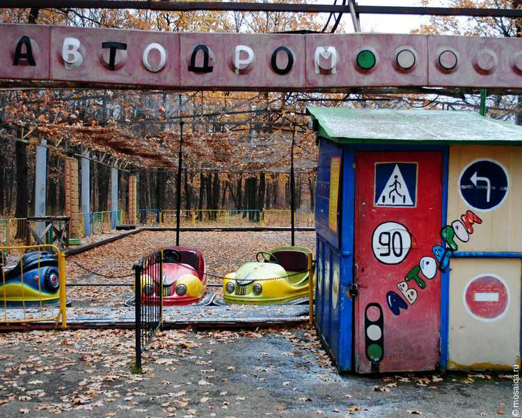
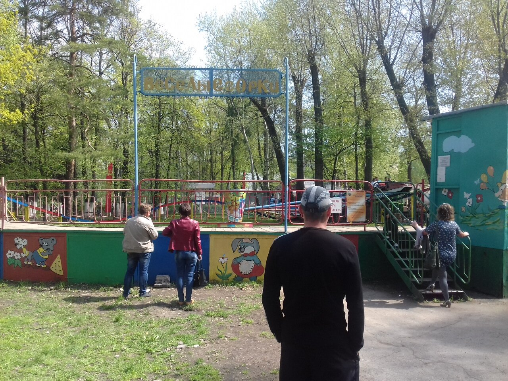
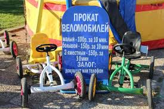
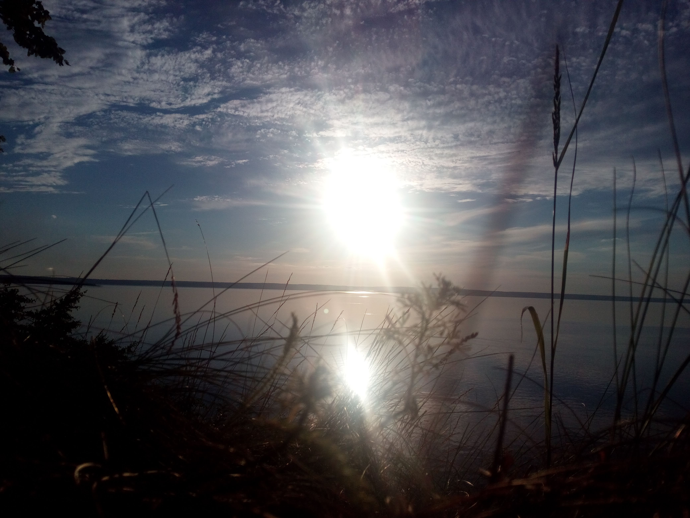

Городок Авиастроителей, самый молодой район Ульяновска, в 1991-м году был просто переполнен детьми. Зрелищ и развлечений для них явно не хватало. Хотя и была небольшая площадка с качелями на улице 40-летия Победы, но с наплывом ребятишек в благоприятные дни она не справлялась. С приобретением новых аттракционов - сталкивающихся автомобилей и "Веселых горок" - руководство площадки оказалось перед проблемой размещения. Выяснилось, что по генеральному плану в Новом городе парк должен размещаться в прибрежной полосе.



В 1991 г. под парк было отведено 44 га лесного массива, тянущегося узкой лентой вдоль водохранилища. В августе 1991 года проходили установка и обкатка новых аттракционов. После открытия парка началось настоящее столпотворение: желающим покататься приходилось стоять по полтора-два часа в очередях. Популярность молодого парка, состоявшего сначала из двух, а через год из четырёх аттракционов, не угасала. Хотя поначалу добираться до него было трудно: приходилось идти через поле "дикими" тропами.
Позднее к Прибрежному проложили асфальтовую дорогу, затем распорядились благоустроить дорожки в самом парке. Появились новые аттракционы для самых маленьких посетителей: карусель "Колокольчик" и веломобили.
К 10-летию парка его центральная часть вместе с главным входом была огорожена металлической оградой. С той даты сохранилась традиция устраивать на асфальтной площадке перед входом в парк концерты и праздничные дискотеки.


Парк Прибрежный представляет собой участок естественного порослевого леса, расположенного по краю террасы перед Куйбышевским водохранилещем.
Геологическое строение территории представлено неоген-четвертичными отложениями. Рельеф участка характеризуется ступенчатым строением с общим уклоном к водохранилищу.
С бототанической точки зрения экопарк "Прибрежный" представляет собой ценный природоохранный участок, так как здесь произрастают особенно редкие виды растений, включенные в Красную книгу Ульяновской области и заслуживающие охраны. Это грушанка средняя, герань Роберта, козелец мечелистый. Кроме того, на территории парка отмечены другие не часто встречающиеся виды растений: прострел раскрытый или сон-трава, очиток степной, веснянка весення.
Древостой парка порослевый, в основном состоит из липы с дополнением из дуба и клёна.

Единично в нём встречается вяз. Лес весьма характерен для парковых территорий: подлесок развит очень слабо, низкорослый и произрастает около стволов деревьев. В северной и южной окраинах парка созданы сосновые посадки.

Среди насекомых здесь встречаются редкие виды: скакун отличный, тускляк, бегун (семейство Жужелицы); а также характерные для песчаных сосняков Заволжья мраморный хрущ, пустынный кузька и шелковистый хрущик.
Видовой состав земноводных, пресмыкающихся и млекопитающих животных парка Прибрежный в целом схож с фауной парка 40-летия ВЛКСМ благодаря пересечённости местности, наличию террас и склонов с различной экспозиции.
В парке зарегистрированно 90 видов птиц. Над территорией парка, вдоль побережья водохранилища, проходит один из крупнейших в области перелётных путей некоторых соколообразных: орлана-белохвоста (Красная книга РФ; Красная книга Ульяновской обл.), зимняка, перепелятника и тетеревятника, полевого луня (Красная книга Ульяновской обл.). При этом часть птиц использует местность папрка для отдыха и ночёвки. На прилегающей акватории водохранилища во время весеннего и осеннего пролёта встречаются такие интересные виды, как лебеди-кликуны, крохаль и клуша.

Особый интерес представляет нахождение в волжском обрыве одной из крупнейших колоний береговых ласточек в пределах города. На прилегающем пустыре в оврагах, выходящих к водохранилищу ежегодно гнездятся золотистые щурки.